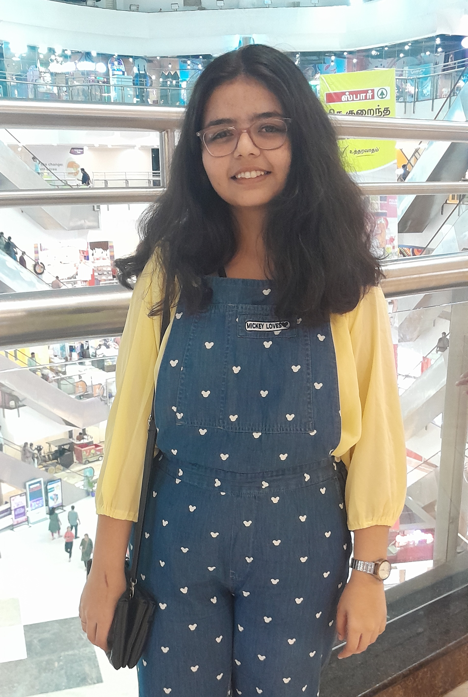

About Me

"Get It Done"
Introduction:
Hello, I'm Chrisitna Sharanyaa Selvakumari S, a passionate and motivated 2nd-year Computer Science Engineering student with a strong foundation in programming and problem-solving.
I have a keen interest in exploring various domains within the IT industry and leveraging technology to create innovative solutions.
Education:
I am doing my Engineering degree in Panimalar Engineering College Chennai City Campus
- Semester 1 results: 9.09 GPA
- Semester 2 results: 9.27 GPA
Interests and Hobbies:
- Drawing
- Painting
- Keyboard(Grade 5)
- Singing
Career Goals:
Short-term Goals:
- Gain hands-on experience through internships or co-op opportunities to apply theoretical knowledge in real-world settings.
- Enhance technical skills by completing online courses, participating in coding competitions, and attending workshops or seminars.
- Network with professionals in the IT industry through events, conferences, and online platforms like LinkedIn.
- Contribute to open-source projects to collaborate with others and expand expertise in specific areas.
Medium-term Goals:
- Secure a summer internship or entry-level position in software development, web development, or data analysis to gain practical experience and industry exposure.
- Specialize in a specific area of interest within computer science, such as artificial intelligence, cybersecurity, or cloud computing, through advanced coursework or self-study.
- Pursue certifications relevant to desired career paths, such as AWS Certified Solutions Architect, Google Certified Professional Cloud Architect, or Microsoft Certified Azure Developer.
- Participate in hackathons or innovation challenges to develop problem-solving skills, creativity, and teamwork abilities.
Long-term Goals:
- Advance to roles with increasing responsibility and leadership opportunities, such as senior software engineer, technical lead, or project manager.
- Obtain a graduate degree or professional certification to deepen expertise and unlock career advancement opportunities.
- Contribute to the development of innovative technologies or solutions that address societal challenges or industry needs.
- Mentor and inspire the next generation of computer science professionals by sharing knowledge, experiences, and insights through teaching, coaching, or volunteering.